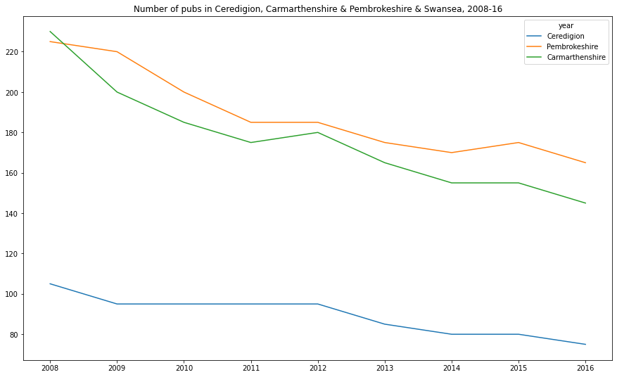
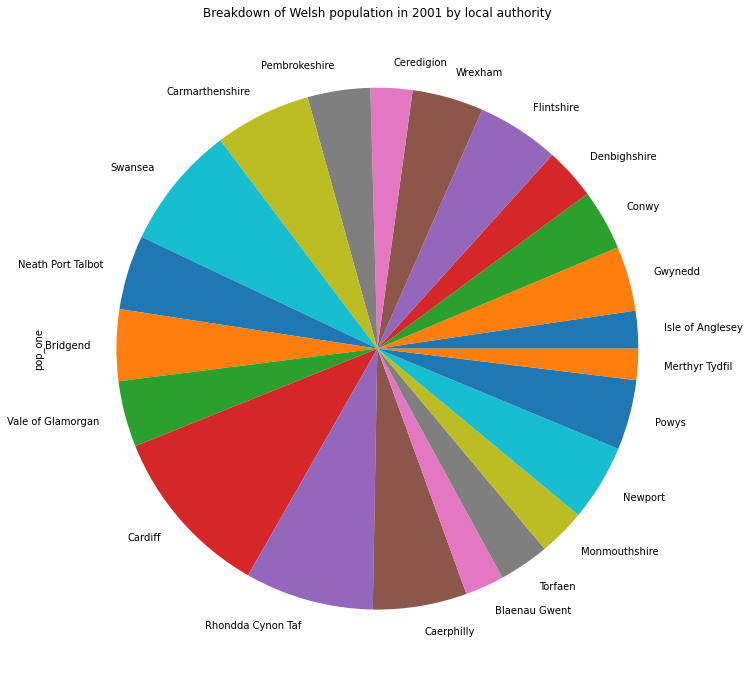
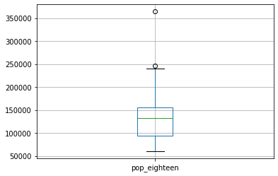

Basic charts in pandas¶
documentation¶
plots available in pandas
‘line’ : line plot (default)
‘bar’ : vertical bar plot
‘barh’ : horizontal bar plot
‘hist’ : histogram
‘box’ : boxplot
‘kde’ : Kernel Density Estimation plot
‘density’ : same as ‘kde’
‘area’ : area plot
‘pie’ : pie plot
‘scatter’ : scatter plot
‘hexbin’ : hexbin plot
import pandas as pd
import matplotlib.pyplot as plt
# import population data in Wales for 2001, 2018
path = '/Users/aidanair/Documents/DATA/ALL_DATASETS/'
file = 'wales_population.csv'
pop = pd.read_csv(path + file)
pop[:3]
| area | pop_one | pop_eighteen | |
|---|---|---|---|
| 0 | Isle of Anglesey | 67,806 | 69,961 |
| 1 | Gwynedd | 116,844 | 124,178 |
| 2 | Conwy | 109,674 | 117,181 |
# check data types
pop.info()
<class 'pandas.core.frame.DataFrame'>
RangeIndex: 22 entries, 0 to 21
Data columns (total 3 columns):
# Column Non-Null Count Dtype
--- ------ -------------- -----
0 area 22 non-null object
1 pop_one 22 non-null object
2 pop_eighteen 22 non-null object
dtypes: object(3)
memory usage: 656.0+ bytes
# fix integers
# remove the ,
pop = pop.replace(',','', regex = True)
# cast population columns to integers
pop.pop_one = pop.pop_one.astype(int)
pop.pop_eighteen = pop.pop_eighteen.astype(int)
# check datatypes again
print(pop.info())
pop[:3]
<class 'pandas.core.frame.DataFrame'>
RangeIndex: 22 entries, 0 to 21
Data columns (total 3 columns):
# Column Non-Null Count Dtype
--- ------ -------------- -----
0 area 22 non-null object
1 pop_one 22 non-null int64
2 pop_eighteen 22 non-null int64
dtypes: int64(2), object(1)
memory usage: 656.0+ bytes
None
| area | pop_one | pop_eighteen | |
|---|---|---|---|
| 0 | Isle of Anglesey | 67806 | 69961 |
| 1 | Gwynedd | 116844 | 124178 |
| 2 | Conwy | 109674 | 117181 |
Bar chart¶
# use area names column as index (instead of row numbers) - this will label the x axis
pop.set_index('area', inplace=True)
pop.head()
| pop_one | pop_eighteen | |
|---|---|---|
| area | ||
| Isle of Anglesey | 67806 | 69961 |
| Gwynedd | 116844 | 124178 |
| Conwy | 109674 | 117181 |
| Denbighshire | 93070 | 95330 |
| Flintshire | 148629 | 155593 |
# bar chart
pop.pop_eighteen.plot(kind = 'bar')
# this works a placeholder 'do nothing' but here stops the <AxesSubplot:title ETC. A semicolon also works
pass
import matplotlib.pyplot as plt
plt.figure(figsize=(14, 5))
pop.boxplot(vert=False, color = 'black')
plt.xlabel('\nxlabel', fontsize = 14)
# plt.legend(topleft)
plt.title('Some title\n', fontsize = 16)
plt.show()

# # horizontal bar chart, with adjusted opacity, title and figure size
pop.pop_eighteen.plot(kind = 'barh', alpha = 0.5, figsize=(15,9));
# stacked barchart with title, grid and labels
pop[['pop_one','pop_eighteen']].plot(kind = 'barh',
figsize=(15,9),
title = 'Population estimates mid-2001 & mid-2018 in Wales (by local authority)',
grid = True,
stacked = False,
xlabel = 'Area',
ylabel = 'Population');
Linechart¶
using numbers of pubs in Wales by local authority 2001-18
path = '/Users/aidanair/Documents/DATA/ALL_DATASETS/'
file = 'wales_pubs_area_2001_18.csv'
# give the df a variable name 'years'
years = pd.read_csv(path + file)
years[:2]
| code | area | 2001 | 2002 | 2003 | 2004 | 2005 | 2006 | 2007 | 2008 | 2009 | 2010 | 2011 | 2012 | 2013 | 2014 | 2015 | 2016 | 2017 | 2018 | |
|---|---|---|---|---|---|---|---|---|---|---|---|---|---|---|---|---|---|---|---|---|
| 0 | W06000001 | Isle of Anglesey | 75 | 85 | 90 | 85 | 85 | 90 | 90 | 80 | 80 | 75 | 70 | 75 | 55 | 60 | 60 | 60 | 60 | 60 |
| 1 | W06000002 | Gwynedd | 135 | 135 | 145 | 145 | 135 | 145 | 150 | 160 | 150 | 135 | 130 | 140 | 140 | 140 | 125 | 120 | 120 | 120 |
# delete the 'code' column
del years['code']
# set the area name as the index
years = years.set_index('area')
years[:2]
| 2001 | 2002 | 2003 | 2004 | 2005 | 2006 | 2007 | 2008 | 2009 | 2010 | 2011 | 2012 | 2013 | 2014 | 2015 | 2016 | 2017 | 2018 | |
|---|---|---|---|---|---|---|---|---|---|---|---|---|---|---|---|---|---|---|
| area | ||||||||||||||||||
| Isle of Anglesey | 75 | 85 | 90 | 85 | 85 | 90 | 90 | 80 | 80 | 75 | 70 | 75 | 55 | 60 | 60 | 60 | 60 | 60 |
| Gwynedd | 135 | 135 | 145 | 145 | 135 | 145 | 150 | 160 | 150 | 135 | 130 | 140 | 140 | 140 | 125 | 120 | 120 | 120 |
# transpose to set the years as the y axis and rename the vertical axis as 'year'
years = years.transpose().rename_axis('year', axis=1)
years[:2]
| year | Isle of Anglesey | Gwynedd | Conwy | Denbighshire | Flintshire | Wrexham | Ceredigion | Pembrokeshire | Carmarthenshire | Swansea | ... | Vale of Glamorgan | Cardiff | Rhondda Cynon Taf | Caerphilly | Blaenau Gwent | Torfaen | Monmouthshire | Newport | Powys | Merthyr Tydfil |
|---|---|---|---|---|---|---|---|---|---|---|---|---|---|---|---|---|---|---|---|---|---|
| 2001 | 75 | 135 | 105 | 110 | 145 | 130 | 75 | 205 | 225 | 200 | ... | 100 | 220 | 185 | 130 | 45 | 75 | 115 | 105 | 235 | 55 |
| 2002 | 85 | 135 | 115 | 120 | 145 | 140 | 80 | 205 | 235 | 230 | ... | 100 | 240 | 195 | 140 | 55 | 85 | 125 | 105 | 230 | 55 |
2 rows × 22 columns
# plot a single column by time
years.Conwy.plot(title = 'Number of pubs in Conwy, 2001-18');

# plot a selection of columns
years[['Cardiff', 'Newport', 'Swansea']].plot(figsize = (15, 9), title = 'Number of pubs in Cardiff, Newport & Swansea, 2001-18');
# plot a period and several areas
years['2008':'2016'][['Ceredigion', 'Pembrokeshire', 'Carmarthenshire']].plot(figsize = (15, 9),
title = 'Number of pubs in Ceredigion, Carmarthenshire & Pembrokeshire & Swansea, 2008-16');

Scatterplot¶
Wales pubs and population in 2018: gives a (dependent) variable to set against population: the number of pubs in local authorities
path = '/Users/aidanair/Documents/DATA/ALL_DATASETS/'
file = 'wales_all.csv'
pp = pd.read_csv(path + file)
pp[:3]
| area | pubs | pop | |
|---|---|---|---|
| 0 | Isle of Anglesey | 60 | 69961 |
| 1 | Gwynedd | 120 | 124178 |
| 2 | Conwy | 100 | 117181 |
# scatterplot with dotsize (s) and dotcolour (c)
pp.plot(kind = 'scatter',
x = 'pop',
y = 'pubs',
figsize=(15,9),
alpha = 0.9,
title = ('Population (mid-2018 estimate) and number of pubs in Wales (by local authority)'),
grid = True,
s = 165,
c = 'r',
xlabel = 'POPULATION',
ylabel = 'PUBS')
# save to current directory
plt.savefig('wales_pop_pub.png')

Histogram¶
# histogram on a single column
pop.pop_eighteen.hist();
# histogram on both cols
pop[['pop_one','pop_eighteen']].plot(kind = 'hist',
alpha = 0.5,
figsize=(15,9),
title = 'Population estimates mid-2001 & mid-2018 in Wales (by local authority)',
grid = True,
stacked = False,
bins = 12,
xlabel = 'Area',
ylabel = 'Population');

Piechart¶
# piechart
pop['pop_one'].plot.pie(figsize=(20,12), title = 'Breakdown of Welsh population in 2001 by local authority');
Boxplot¶
# box plots by single column...
pop.boxplot('pop_one');

pop.boxplot('pop_eighteen');

# ... and by df (with default vertical turned off) and colour selected
pop.boxplot(vert = False, grid = False, color = 'red');